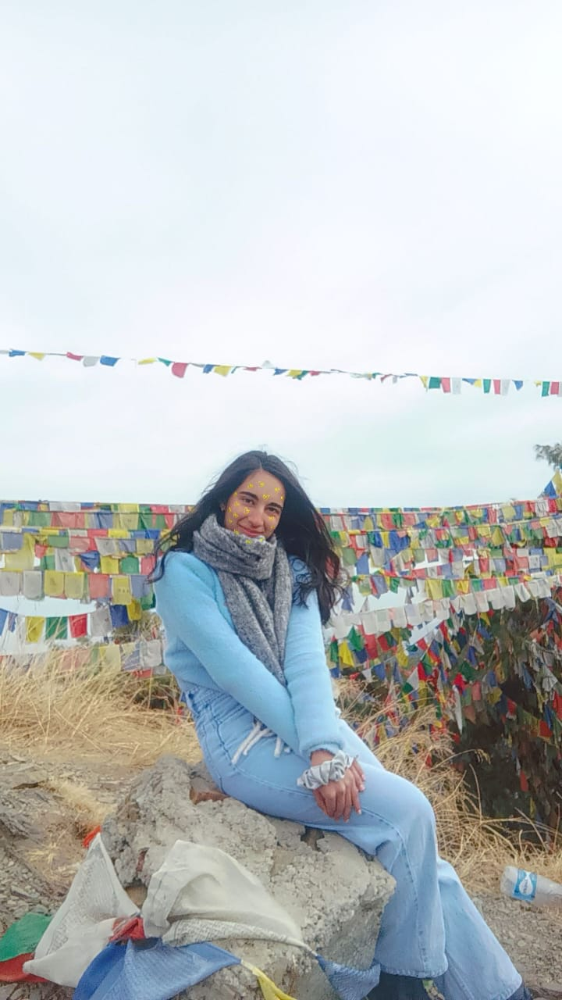

Contact:9089674567
Email:acsml100@gmail.com
Linkedin:linkedin.com/in/Anshika Chauhan
|  |
About MeI am Anshika Chauhan, a passionate and sporty individual with a deep love for nature and animals. I have competed at the state level in basketball and actively participated in various inter-college sports events, securing 3rd place in football and a runner-up position in basketball. My latest OCPA and CPA were 8.29 and 8.91, reflecting my dedication to academics alongside my sports achievements. I completed my schooling at Loreto Convent Tara Hall. With a strong interest in technology, I aspire to become a web developer, continuously learning and improving my skills to build innovative and user-friendly web applications. |
Lingo Buddy is our language translation web application, designed to break language barriers and enhance communication. We leverage the power of Google API to provide accurate and seamless translations. The project is still in progress, and our team is actively working to refine and complete it for a smooth user experience.
As a second-semester student, I created a very basic, beginner-friendly "Guess the Number" game using the C language. This simple project helps users engage with fundamental programming concepts like loops, conditionals, and random number generation. It was a great learning experience and a step toward improving my coding skills.
I am currently developing a CRM system using SQL with a bit of AI integration to enhance automation and data analysis. The work is still in progress, focusing on implementation and optimization. Once completed, it will streamline customer management efficiently. The project is advancing steadily and will be completed soon.